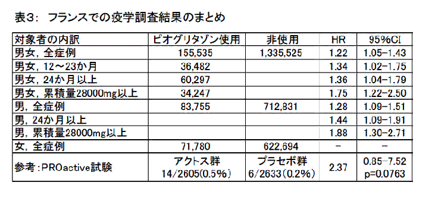

ピオグリタゾン含有製剤（アクトスなど）について、2011年6月9日、フランスでは新規患者への処方を禁止する決定がなされ、ドイツでも同様の決定がなされました。7月以降には回収が開始される予定だそうです。
2010年11月ドイツ保健省が、ピオグリタゾン（アクトス：武田薬品）や同系統のグリタゾン剤であるロシグリタゾン（rosiglitazone：商品名Avandia) とともに、保険で支払う医療費の償還対象から外す決定をしましたが、そのことに加えて、さらに厳しい決定がなされたことを意味します。
ドイツでの保険償還対象外措置の主な理由は、心不全と骨折の増加でしたが、今回のフランスとドイツでの新たな患者への使用禁止の主な理由は、膀胱がんの増加です。
日本では厚生労働省が、2011年6月23日に安全対策調査会を開催して、膀胱がん患者には使用しない、膀胱がんの既往歴ある患者には危険と利益のバランスを特に考慮する、膀胱がんの危険性があることを周知する、血尿など膀胱がんの兆候についての注意などを添付文書に加える、などの措置をすることで販売継続が決定されました。
膀胱がん、がん全体に対する危険、心不全に関する害については、TIP誌2000年4月号、同10月号、薬のチェックは命のチェック創刊号、2006年1月号、脳卒中既往歴のある人に有効との主張の根拠のないことについては、薬のチェックは命のチェックNo27（2007年7月）で取り上げて詳述しました。また、2000年10月には医薬ビジランス研究所として、同年10月10日には、NPO法人医薬ビジランスセンター（薬のチェック）および医薬品・治療研究会として厚生労働省に対して使用中止と回収を求める要望書を提出しました。骨折の害に関しては、TIP誌2010年12月号で詳細に取り上げました。
今回は、膀胱がんの増加を示す疫学調査結果が、いくつか明らかになってきましたので、これらを紹介したいと思います。
まず、利益と害のバランスについて総合的に振り返り、その後に膀胱がんの増加に関して述べ、動物実験や承認前の段階の臨床試験の詳細な解析の重要性について、あらためて強調したいと思います。
以上の記載は、添付するPDFファイルの冒頭部分と重複しています。また、ここでは、新しい膀胱がんとの関係についてのまとめを紹介しておきます。全体は、PDFファイルを参照ください。
フランスの調査では、全体で1.22倍、12〜23か月使用で1.34倍、24か月以上使用で1.36倍、累積使用量が28000mg以上（毎日30mg服用したとして、2.6年以上）では1.75であり、いずれも統計学的に有意でした。男性でこの傾向はさらに強く、全体で1.28倍、24か月以上で1.44倍、28000mg以上は1.88倍で、いずれも有意でした（表3）。長期になり用量が増えるほど危険度が増していました。
米国のKaiser Permanenteの疫学調査でも似た結果が出ていて、用量が増えるほど膀胱がんが増加するという関係もありました。
なお、PDFファイルは、TIP誌2011年6月号に書いた記事（浜六郎、木元康介）を改訂したものです（文献番号がやや異なっていますのでご注意ください）。